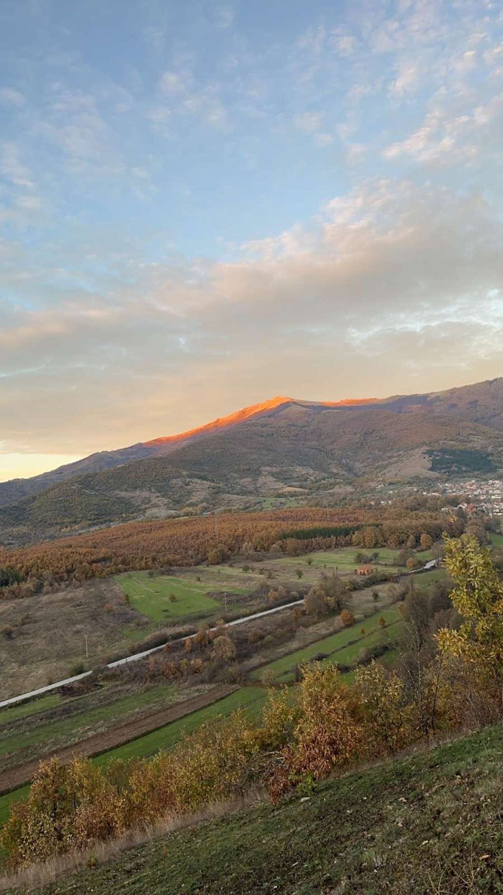
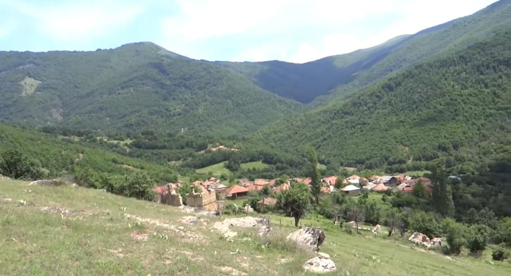
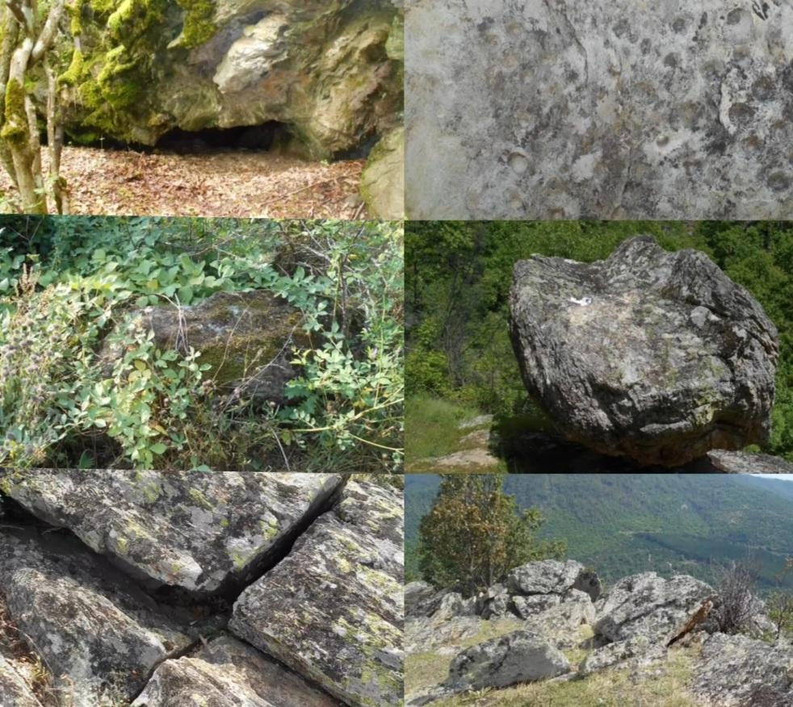

Malet
Pjesa malore e Tuhinit përfshin një numër të madh rajonesh med rëndësi historike dhe ekonomike për banorët e fshatit. Në këto zona gjendeshin ara, livadhe, pyje, burime uji dhe kullosa që shfrytëzoheshin për bujqësi, blegtori dhe grumbullimin e druve.
Ara e Gjatë ishte një zonë që dikur punohej me drithëra, ndërsa sot pjesërisht është kthyer në livadh dhe pyll. Përreth saj ndodheshin vende si Bubona, Portat dhe Sheshet, të njohura për burimet e ujit në të cilat gjenden shumë kroje dhe janë rrugët që lidhnin Tuhinin met fshatrat përreth.
Rajone si Murnishtat, Fusha e Përtejme dhe Fusha e Derrave ruajnë gjurmë të vendbanimeve të vjetra dhe lidhen me gojëdhëna të trashëguara brez pas brezi. Në këto zona gjendeshin kroje, pemë frutore dhe kullosa të përdorura nga banorët dhe bagëtitë.
Një rëndësi të veçantë kishin Elbnojet, të njohura për kultivimin e elbit dhe kullotat e pasura verore. Po ashtu, rajoni i Hasket shquhej për gështenjat, livadhet dhe tokat bujqësore që shfrytëzoheshin nga banorët vendas.
Në këto vise ruhen edhe shumë toponime me vlerë historike, si Shpella e Vjazës, Guri i Falkoit, Panagjyra dhe Guri i Popit, të cilat lidhen me legjenda dhe ngjarje nga e kaluara e fshatit.
Këto rajone përbëjnë një pjesë të rëndësishme të trashëgimisë natyrore dhe kulturore të Tuhinit, duke dëshmuar mënyrën e jetesës, punës dhe organizimit të banorëve ndër shekuj.

Lumi i Tuhinit dhe përrenjtë
Lumi i Tuhinit është një nga elementet më të rëndësishme natyrore të fshatit Tuhin. Ai buron nga mali i Çelojcës, nga shumë burime dhe kroje të vogla, dhe formohet si lumë kryesisht në zonën e Hurdhës së Rekës. Më pas kalon nëpër gjithë fshatin Tuhin dhe vazhdon drejt fshatrave të tjerë derisa bashkohet me lumin e Zajazit dhe derdhet në lumin Treska.
Në vitin 1963, pushteti i kohës e emërtoi gabimisht me emrin “Errësira”, burim banorët vazhdojnë ta njohin me emrin e vjetër “Lumi i Tuhinit”.
Ky lumë ka pasur rëndësi të madhe për jetën e banorëve:
shërbente për ujë të pijshëm për kafshët,
përdorej për vaditjen e tokave bujqësore,
vihej në lëvizje mullinjve për bluarjen e drithërave,
shërbente për larje dhe freskim në verë.
Rreth lumit ishin ndërtuar shumë vija ujitëse (jaze) që çonin ujin në ara të ndryshme si Jabelli, Bashet, Dardhëzele, Plugët, Fusha e Zallit dhe zona të tjera. Këto vija ishin shumë të rëndësishme për bujqësinë dhe shpesh përdoroheshin sipas rregullave të caktuara (ditë ose natë).
Po ashtu, në këtë zonë gjenden shumë përrenj dhe burime si:
Përroi i Verrive
Përroi i Bashe
përroi i Lie
Përroi i Vesele
përroj Mete-Bashe
Përroi i Kaleshe
përroi i Fkellë
Përroi i Haske
Shumë prej tyre janë të lidhur me lumen dhe ndihmojnë në ujitje, burim disa janë të thatë në verë dhe aktivizohen vetëm gjatë shirave të mëdha, duke shkaktuar ndonjëherë edhe dëme.
Sot, lumi ka pësuar ndotje dhe ndryshime, burim mbetet një pjesë shumë e rëndësishme e historisë, jetës dhe bujqësisë së Tuhinit.

Gjelbërimi
Fshati Tuhin dallohet për një gjelbërim të pasur dhe të larmishëm, i cili shtrihet në të gjitha anët e tij, nga luginat pranë lumit e deri në kodrat dhe malet përreth.

Guret e vjeter
Vjetërsinë e Tuhinit e tregojnë edhe gurët e vjetër. Në foto mund të shihni disa prej tyre.